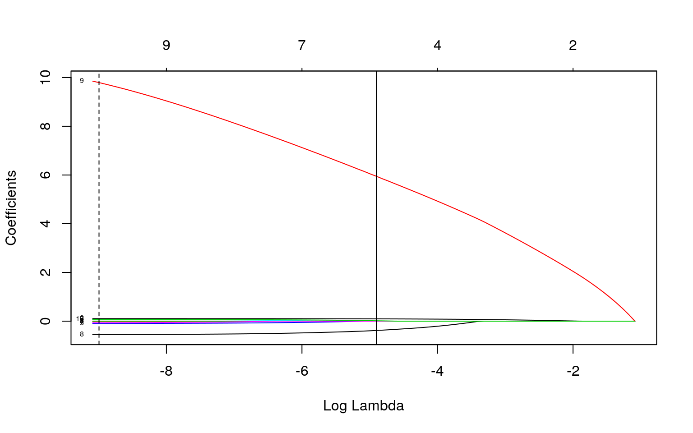

January 1, 0001
wife<- read.csv("https://vincentarelbundock.github.io/Rdatasets/csv/Ecdat/Workinghours.csv")This dataset contains data that was collected from working women. It contains 12 columns and 3382 observations. There are 8 numeric variables. The numbers of hours the wife works, her household income (in hundreds of dollars), her age, the number of children she has between ages 0-5, 6-13, and 14-17, her local unemployment rate, and lastly her education years. There is one categorical variable, occupation of her husband. The options were farmer, (fr), manager or professional (mp), sales worker, clerk, or craftsman (swcc), or other. Finally, there are 3 binary variables: is the wife non-white, is her home owned by the couple, and do they have a mortgage.
Manova
man1<-manova(cbind(age,education, income)~occupation, data=wife)
summary(man1)## Df Pillai approx F num Df den Df Pr(>F)
## occupation 3 0.2277 92.483 9 10134 < 2.2e-16 ***
## Residuals 3378
## ---
## Signif. codes: 0 '***' 0.001 '**' 0.01 '*' 0.05 '.' 0.1
' ' 1summary.aov(man1)## Response age :
## Df Sum Sq Mean Sq F value Pr(>F)
## occupation 3 6819 2272.87 17.898 1.598e-11 ***
## Residuals 3378 428969 126.99
## ---
## Signif. codes: 0 '***' 0.001 '**' 0.01 '*' 0.05 '.' 0.1
' ' 1
##
## Response education :
## Df Sum Sq Mean Sq F value Pr(>F)
## occupation 3 3114.1 1038.02 210.95 < 2.2e-16 ***
## Residuals 3378 16621.9 4.92
## ---
## Signif. codes: 0 '***' 0.001 '**' 0.01 '*' 0.05 '.' 0.1
' ' 1
##
## Response income :
## Df Sum Sq Mean Sq F value Pr(>F)
## occupation 3 30061057 10020352 135.2 < 2.2e-16 ***
## Residuals 3378 250362010 74115
## ---
## Signif. codes: 0 '***' 0.001 '**' 0.01 '*' 0.05 '.' 0.1
' ' 1wife%>%group_by(occupation)%>%summarize(mean(age),mean(education),mean(income))## # A tibble: 4 x 4
## occupation `mean(age)` `mean(education)` `mean(income)`
## <fct> <dbl> <dbl> <dbl>
## 1 fr 38.2 11.7 189.
## 2 mp 36.7 14.0 439.
## 3 other 38.3 11.6 212.
## 4 swcc 34.9 12.5 281.pairwise.t.test(wife$age,wife$occupation,p.adj="none")##
## Pairwise comparisons using t tests with pooled SD
##
## data: wife$age and wife$occupation
##
## fr mp other
## mp 0.25188 - -
## other 0.92783 0.00099 -
## swcc 0.00979 0.00031 5.6e-13
##
## P value adjustment method: nonepairwise.t.test(wife$education,wife$occupation,p.adj="none")##
## Pairwise comparisons using t tests with pooled SD
##
## data: wife$education and wife$occupation
##
## fr mp other
## mp <2e-16 - -
## other 0.7990 <2e-16 -
## swcc 0.0018 <2e-16 <2e-16
##
## P value adjustment method: nonepairwise.t.test(wife$income,wife$occupation,p.adj="none")##
## Pairwise comparisons using t tests with pooled SD
##
## data: wife$income and wife$occupation
##
## fr mp other
## mp 7.1e-16 - -
## other 0.4490 < 2e-16 -
## swcc 0.0028 < 2e-16 1.4e-09
##
## P value adjustment method: none0.05/22 ## Bonferroni correction## [1] 0.002272727##Assumptions
library(rstatix)
group <- wife$occupation
DVs <- wife %>% select(age, education,income)
sapply(split(DVs,group), mshapiro_test)## fr mp other swcc
## statistic 0.7991666 0.5137868 0.7163884 0.8371361
## p.value 2.079829e-09 2.922192e-45 1.78382e-42
4.803303e-31In total 22 tests were performed: 1 Manova, 3 Anovas, and 18 t-tests. After the bonferroni correction, the new signficance level was 0.0023. It was concluded that occupation differed significantly by age between fr and swcc, mp and other, swcc and mp, and other and swcc. Husbands occupation differed signficantly by wife's education for all occupation categories excepet between fr and swcc. Husbands occupation differed signficantly by household income for all occupation categories excepet between fr and swcc and fr and swcc.There are many MANOVA assumptions that must be met including random samples, independent observations, multivariate normality, homogeneity, no outliers, and no linear relationships. The multivariate normaility assumption was tested for and the p-value was less than 0.05. As a result, the null hypothesis was rejected which means the assumptions were not met.
Randomization Test: Difference in Means
wife%>%group_by(mortgage)%>%
summarize(means=mean(age))%>%summarize(`mean_diff`=diff(means))## # A tibble: 1 x 1
## mean_diff
## <dbl>
## 1 0.886rand_dist<-vector()
for(i in 1:5000){
new<-data.frame(age=sample(wife$age),mortgage=wife$mortgage)
rand_dist[i]<-mean(new[new$mortgage=="1",]$age)-
mean(new[new$mortgage=="0",]$age)
}
mean(rand_dist< -0.88579 | rand_dist> 0.88579) ## [1] 0.0206{hist(rand_dist,main="",ylab=""); abline(v = c(-0.88579, 0.88579),col="red")} ####I performed a randomized mean difference to test if there is a significant difference in age between groups that did and did not have a mortgage. The null hypothesis was: there is no significant mean difference in age between those who do and do not have a mortgage. The alternate hypothesis was: there is a significant mean difference in age between those who do and do not have a mortgage. The p-value was determined to be 0.0242. Therefore you reject the null hypothesis and conclude there is a mean difference in age between those who do and do not have a mortgage.
####I performed a randomized mean difference to test if there is a significant difference in age between groups that did and did not have a mortgage. The null hypothesis was: there is no significant mean difference in age between those who do and do not have a mortgage. The alternate hypothesis was: there is a significant mean difference in age between those who do and do not have a mortgage. The p-value was determined to be 0.0242. Therefore you reject the null hypothesis and conclude there is a mean difference in age between those who do and do not have a mortgage.
Linear Regression Model
##Regression Model
wife$age_c <- wife$age - mean(wife$age)
wife$income_c <- wife$income - mean(wife$income)
fit<-lm(education ~ age_c * income_c, data=wife)
summary(fit)##
## Call:
## lm(formula = education ~ age_c * income_c, data = wife)
##
## Residuals:
## Min 1Q Median 3Q Max
## -11.2368 -1.0935 -0.2796 1.2373 5.9061
##
## Coefficients:
## Estimate Std. Error t value Pr(>|t|)
## (Intercept) 1.260e+01 3.975e-02 317.063 < 2e-16 ***
## age_c -5.543e-02 3.559e-03 -15.574 < 2e-16 ***
## income_c 3.200e-03 1.795e-04 17.823 < 2e-16 ***
## age_c:income_c -7.477e-05 1.314e-05 -5.689 1.39e-08 ***
## ---
## Signif. codes: 0 '***' 0.001 '**' 0.01 '*' 0.05 '.' 0.1
' ' 1
##
## Residual standard error: 2.256 on 3378 degrees of
freedom
## Multiple R-squared: 0.1291, Adjusted R-squared: 0.1283
## F-statistic: 166.9 on 3 and 3378 DF, p-value: < 2.2e-16##Regression Plot
wife_new <- bind_rows(mutate(wife,age_c=0), mutate(wife,age_c=sd(age)), mutate(wife,age_c=-sd(age)))
wife_new <- wife_new%>%
mutate(age_cat=c(rep("mean",nrow(wife)), rep("mean+1sd",nrow(wife)), rep("mean-1sd",nrow(wife))))
wife_new$newprob <- predict(fit, newdata=wife_new, type="response")
ggplot(wife_new, aes(income_c,newprob))+geom_line(aes(color=age_cat))library(sandwich); library(lmtest)
## Checking for assumptions
resids<-fit$residuals
fitted<-fit$fitted.values
plot(fitted,resids); abline(h=0, col='red')par(mfrow=c(1,2)); hist(resids); qqnorm(resids); qqline(resids, col='red')##With Robust Standard Erros
coeftest(fit)[,1:2] ## Estimate Std. Error
## (Intercept) 1.260260e+01 3.974796e-02
## age_c -5.542972e-02 3.559088e-03
## income_c 3.199807e-03 1.795354e-04
## age_c:income_c -7.476854e-05 1.314355e-05coeftest(fit, vcov=vcovHC(fit))[,1:2]## Estimate Std. Error
## (Intercept) 1.260260e+01 4.368171e-02
## age_c -5.542972e-02 4.281447e-03
## income_c 3.199807e-03 2.804388e-04
## age_c:income_c -7.476854e-05 3.267141e-0512.6 years is the mean education for people with an average income at an average age. At an average income, for every 1 unit increase in age, education level goes down by -.055 years. At an average age, for every 1 unit increase in income, education goes up by 0.0032 years. There was an interaction between age and income. Therefore, the effect of age on education depends on income. The coefficient of -0.001 indicates that the effect of income on education decreases the older you are in age. According to the residual and qq plot, the linearity and homoskewdasticity assumption was not met. In addition, the data is somewhat normally distrubuted but definitely not perfectly. Therefore, this regression model did not meet assumptions. Robust standard error calculations produced a larger standard error than before. Because the robust standard errors are larger, they are considered the more conservative of the two values. Therefore, they should be the standard errors chosen for the model. The adjusted r-squared value was 0.128; therefore, 12.8% of the variation in the outcome is explained by the model.
Bootstrapping
boot<- sample_frac(wife, replace=T)
samp_distn<-replicate(5000, {
boot <- sample_frac(wife, replace=T)
fit1 <- lm(education~income_c*age_c, data=boot)
coef(fit1)
})
samp_distn %>% t %>% as.data.frame %>% summarize_all(sd) ## (Intercept) income_c age_c income_c:age_c
## 1 0.0425837 0.000270012 0.004257188 2.568681e-05The boot strapped standard errors are slightly smaller than the robust standard errors but slightly larger the original SE's. Since it is better to go with the more larger, more conservative standard errors, the robust standard errors from above should still be used to represent this model.
Logistic Regression
fit2<-glm(owned~age+income+hours, data=wife, family="binomial")
coeftest(fit2)##
## z test of coefficients:
##
## Estimate Std. Error z value Pr(>|z|)
## (Intercept) -3.4419e+00 1.8697e-01 -18.4089 < 2.2e-16
***
## age 6.9225e-02 4.3662e-03 15.8546 < 2.2e-16 ***
## income 6.1489e-03 3.5496e-04 17.3227 < 2.2e-16 ***
## hours 2.5334e-04 4.8638e-05 5.2087 1.901e-07 ***
## ---
## Signif. codes: 0 '***' 0.001 '**' 0.01 '*' 0.05 '.' 0.1
' ' 1coef(fit2)%>%exp%>%round(5)%>%data.frame## .
## (Intercept) 0.03201
## age 1.07168
## income 1.00617
## hours 1.00025probs<-predict(fit2,type="response")
table(predict=as.numeric(probs>.5),truth=wife$owned)%>%addmargins## truth
## predict 0 1 Sum
## 0 565 268 833
## 1 514 2035 2549
## Sum 1079 2303 3382#Sensitivity
2035/2303## [1] 0.88363#Speceficity:
565/1079## [1] 0.523633#Precision
2035/2303## [1] 0.88363#Accuracy
(565+2303)/3382## [1] 0.8480189library(plotROC)
ROCplot<-ggplot(wife)+geom_roc(aes(d=owned,m=probs), n.cuts=0)
ROCplotcalc_auc(ROCplot)## PANEL group AUC
## 1 1 -1 0.803852#ggplot
wife$logit<-predict(fit2,type="link")
wife%>%mutate(owned=as.factor(owned)) %>%ggplot()+geom_density(aes(logit,color=owned,fill=owned), alpha=0.4)+
theme(legend.position=c(.85,.85))+geom_vline(xintercept=0)+xlab("logit (log-odds)")+
geom_rug(aes(logit,color=owned))##Predicted odds of homeownership when age, income, and hours are 0 is 0.032. Controlling for income and hours, for every one-unit increase in age, predicted odds of ownership increase by a factor of 1.07. Controlling for age and hours, for every one-unit increase in income, predicted odds of ownership increase by a factor of 1.006. Controlling for age and income, for every one-unit increase in hours, predicted odds of ownership increase by a factor of 1.00. The TPR is 0.884. The TNR is 0.524. The precision is 0.884,and the accuracy is 0.848. Therefore, the accuracy, sensitivity, and precision are pretty good. The speceficity is okay but definitely has room for improvement. The auc, 0.8, is considered good. Therefore, this model is pretty good at predicting ownership.
Logistic Regression with all Variables & Lasso
#Class Diag
class_diag<-function(probs,truth){
tab<-table(factor(probs>.5,levels=c("FALSE","TRUE")),truth)
acc=sum(diag(tab))/sum(tab)
sens=tab[2,2]/colSums(tab)[2]
spec=tab[1,1]/colSums(tab)[1]
ppv=tab[2,2]/rowSums(tab)[2]
f1=2*(sens*ppv)/(sens+ppv)
if(is.numeric(truth)==FALSE & is.logical(truth)==FALSE){
truth<-as.numeric(truth)-1}
ord<-order(probs, decreasing=TRUE)
probs <- probs[ord]; truth <- truth[ord]
TPR=cumsum(truth)/max(1,sum(truth))
FPR=cumsum(!truth)/max(1,sum(!truth))
dup<-c(probs[-1]>=probs[-length(probs)], FALSE)
TPR<-c(0,TPR[!dup],1); FPR<-c(0,FPR[!dup],1)
n <- length(TPR)
auc<- sum( ((TPR[-1]+TPR[-n])/2) * (FPR[-1]-FPR[-n]) )
data.frame(acc,sens,spec,ppv,f1,auc)
}
##Logistic Regression with all variables
fit3<-glm(owned~age+education+income+child5+child13+child17+nonwhite+mortgage+unemp, data=wife, family="binomial")
prob3<-predict(fit3,type="response")
class_diag(prob3,wife$owned)## acc sens spec ppv f1 auc
## 1 0.9086339 0.913591 0.8980538 0.9503162 0.9315918
0.965872##Out of Sample:
k=10
data<-wife[sample(nrow(wife)),]
folds<-cut(seq(1:nrow(wife)),breaks=k,labels=F)
diags<-NULL
for(i in 1:k){
train<-data[folds!=i,]
test<-data[folds==i,]
truth<-test$owned
fit<-glm(owned~age+education+income+child5+child13+child17+nonwhite+mortgage+unemp, data=wife,family="binomial")
probs<-predict(fit,newdata = test,type="response")
diags<-rbind(diags,class_diag(probs,truth))
}
summarize_all(diags,mean)## acc sens spec ppv f1 auc
## 1 0.9086514 0.9135036 0.8981463 0.9501902 0.9313762
0.9653966#LASSO
library(glmnet)
y<-as.matrix(wife$owned)
x<-model.matrix(owned~age+education+income+child5+child13+child17+nonwhite+mortgage+unemp,data=wife)
head(x)## (Intercept) age education income child5 child13 child17
nonwhite mortgage unemp
## 1 1 26 12 350 0 1 0 0 1 7
## 2 1 29 8 241 0 1 1 0 1 4
## 3 1 33 10 160 0 2 0 0 0 7
## 4 1 20 9 80 2 0 0 0 1 7
## 5 1 33 12 456 0 2 0 0 1 7
## 6 1 22 12 390 2 0 0 0 1 7cv <- cv.glmnet(x,y, family="binomial")
{plot(cv$glmnet.fit, "lambda", label=TRUE); abline(v = log(cv$lambda.1se)); abline(v = log(cv$lambda.min),lty=2)}
lasso<-glmnet(x,y,family="binomial",lambda=cv$lambda.1se)
coef(lasso)## 11 x 1 sparse Matrix of class "dgCMatrix"
## s0
## (Intercept) -4.543741030
## (Intercept) .
## age 0.094479366
## education .
## income 0.001250309
## child5 .
## child13 .
## child17 .
## nonwhite -0.381913950
## mortgage 5.946012883
## unemp 0.016235234##Lasso Variable Logistic Regression
k=10
data<-wife[sample(nrow(wife)),]
folds<-cut(seq(1:nrow(wife)),breaks=k,labels=F)
diags<-NULL
for(i in 1:k){
train<-data[folds!=i,]
test<-data[folds==i,]
truth<-test$owned
fit<-glm(owned~age+income+nonwhite+mortgage, data=wife,family="binomial")
probs<-predict(fit,newdata = test,type="response")
diags<-rbind(diags,class_diag(probs,truth))
}
summarize_all(diags,mean)## acc sens spec ppv f1 auc
## 1 0.9089255 0.9132469 0.8998095 0.9510783 0.9316809
0.9656467